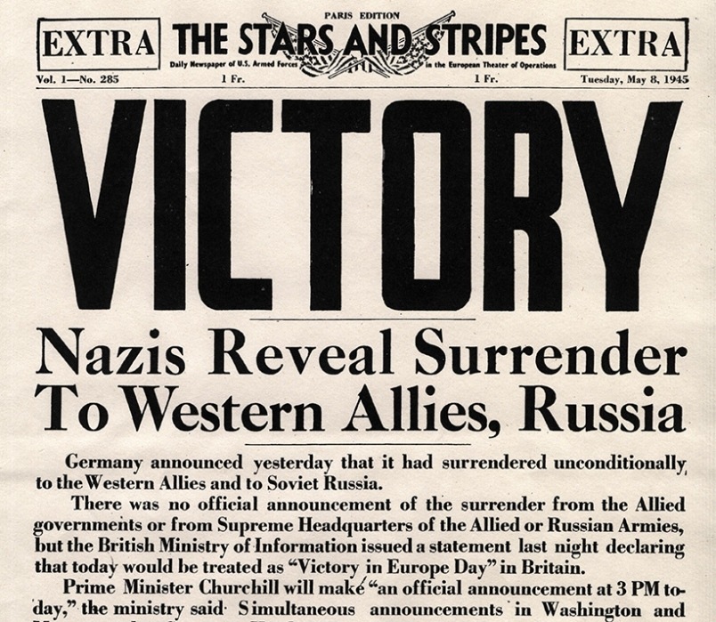
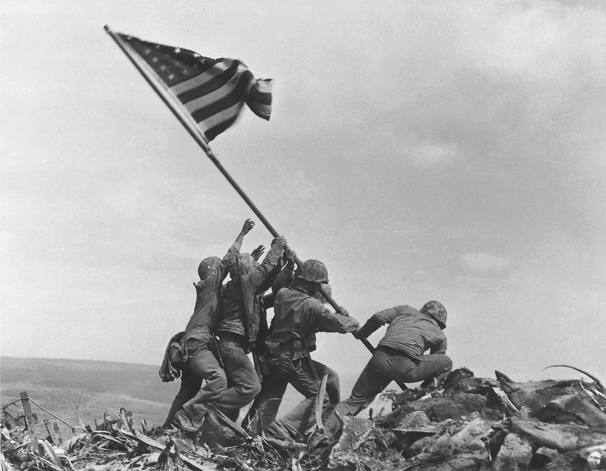
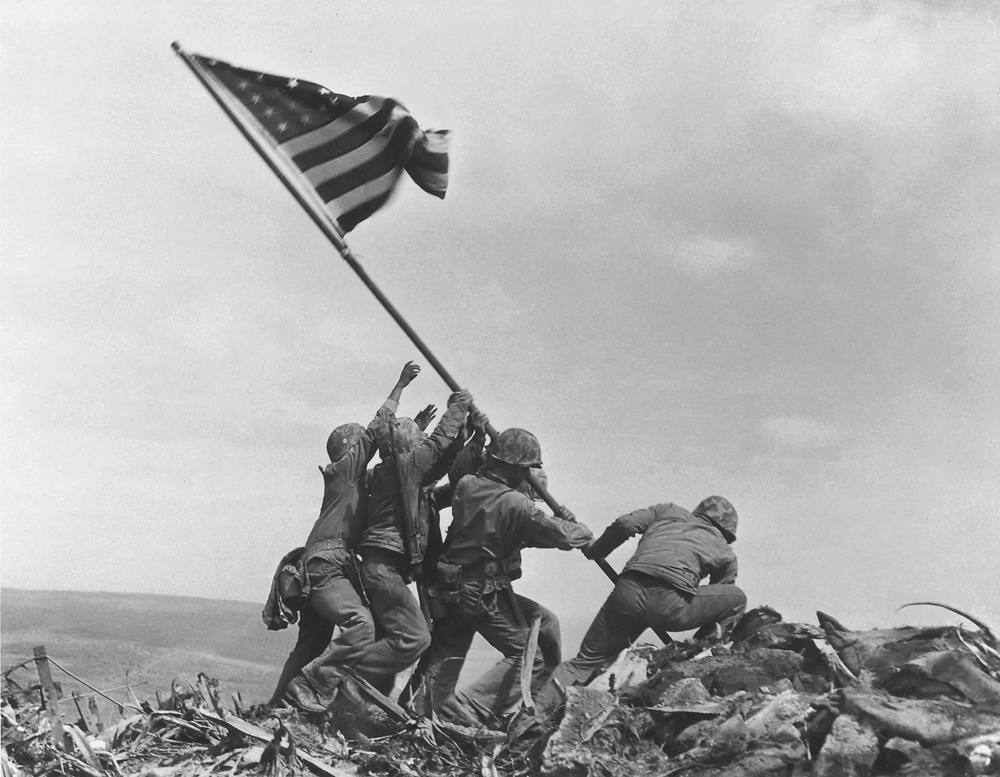

THE IMPACT
OPERATION DYNAMO
THE MISSION
THE MAN
THE IMPACT
Bertram Ramsay's Impact
Overall, Bertram Ramsay contributed heavily to operation dynamo,
being one of the key contributors to make it possible. Throughout
his planning, Ramsay displayed his powerful leadership, quick
thinking, and overall intelligence. Without Ramsay, operation
dynamo would not have been possible, and those 300,000 soldiers
would not have lived. Ramsay directly altered the outcome of World
War II, giving the allied forces the extra man power they needed to
win the war, and without Ramsay it isn’t entirely safe to say that
World War II would’ve left the allies victorious.
Representation of Allied forces winning WWII. The battle of Iwo Jima Britanica
Original newspaper detailing the allied forces victory. ARRL
 
